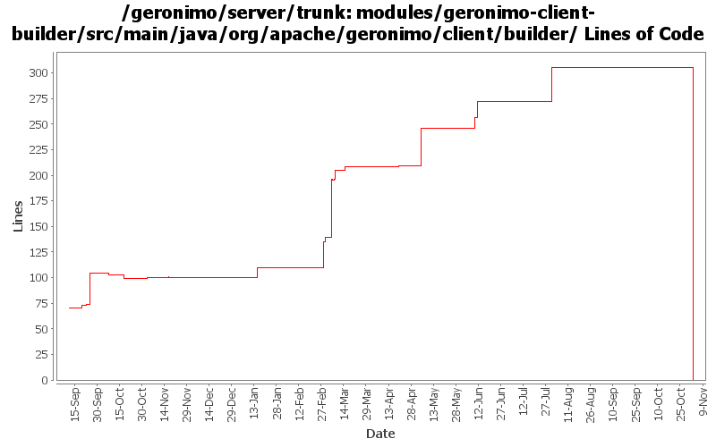

[root]/modules/geronimo-client-builder/src/main/java/org/apache/geronimo/client/builder
 jsr88
(0 files, 0 lines)
jsr88
(0 files, 0 lines)

| Author | Changes | Lines of Code | Lines per Change |
|---|---|---|---|
| Totals | 40 (100.0%) | 577 (100.0%) | 14.4 |
| djencks | 29 (72.5%) | 516 (89.4%) | 17.7 |
| akulshreshtha | 1 (2.5%) | 21 (3.6%) | 21.0 |
| sppatel | 2 (5.0%) | 18 (3.1%) | 9.0 |
| rickmcguire | 1 (2.5%) | 10 (1.7%) | 10.0 |
| jlaskowski | 1 (2.5%) | 6 (1.0%) | 6.0 |
| hogstrom | 1 (2.5%) | 2 (0.3%) | 2.0 |
| gawor | 1 (2.5%) | 2 (0.3%) | 2.0 |
| dwoods | 1 (2.5%) | 2 (0.3%) | 2.0 |
| prasad | 2 (5.0%) | 0 (0.0%) | 0.0 |
| kevan | 1 (2.5%) | 0 (0.0%) | 0.0 |
GERONIMO-3565. Modules distributed amongst framework/modules and plugins
0 lines of code changed in 2 files:
fix build error
2 lines of code changed in 1 file:
GERONIMO-2286 GERONIMO-1874 GERONIMO-3140 Use patterns for external-rar in app client plans and external-path in ear plan external modules. Allow partial artifacts and use an ArtifactResolver to fill in the missing bits. Use client_artifact_aliases.properties in the app client builder to help avoid using server side modules when client side modules are intended for runtime. This is not backward compatible for apps using external-rar or external-path.
70 lines of code changed in 2 files:
GERONIMO-3246 Cleanup exception handling so stack traces for first failures are not discarded.
10 lines of code changed in 1 file:
GERONIMO-3144, GERONIMO-3236 Make standalone app clients deploy (and even work)
17 lines of code changed in 1 file:
GERONIMO-2687. Don't construct default and run-as subjects, get them from a login module. Also creates a separate server-security-config for the security config stuff you probably want to change. Also fixes lots of security problems, including mdb run-as handling.
47 lines of code changed in 1 file:
GERONIMO-3185 Add the class into xml lifecycle method specification when its missing for app client and ejb
1 lines of code changed in 1 file:
GERONIMO-3132 GERONIMO-3165. Fix a bunch of stuff with locating persistence.xml and persistence unit jars. Hook up with openejb for extended persistence contexts
2 lines of code changed in 1 file:
GERONIMO-3151 DeploymentUtil.recursiveDelete(File,Collection) is returning a collection of File objects, whereas most builders are expecting Strings
2 lines of code changed in 1 file:
GERONIMO-3134 App client module needs to return client environment from getEnvironment. Server environment is a problem, see GERONIMO-3144
4 lines of code changed in 1 file:
GERONIMO-3134 share message destinations with appclient
2 lines of code changed in 1 file:
GERONIMO-3134 GERONIMO-3136 Fix app client refs including ejb refs. Get a lot closer to jpa working on the app client
52 lines of code changed in 1 file:
Added additional information about the specific module which was causing the a deployment error.
2 lines of code changed in 1 file:
GERONIMO-2958 MyFaces annotation support. Also clean up Module construction and remove unused method from ModuleBuilderExtension
10 lines of code changed in 1 file:
GERONIMO-2940, GERONIMO-2887 More injection work for app client and jetty: lifecycle methods verified on app client. Ear lib dir available to app client. Also upgrade to jetty snapshot for jetty lifecycle method support
47 lines of code changed in 1 file:
GERONMO-2887 More work to on injections and lifecycle methods
4 lines of code changed in 1 file:
Remove incorrect TODO
0 lines of code changed in 1 file:
GERONIMO-2934 Create ClassFinder in module builders. This almost certainly has bugs
58 lines of code changed in 1 file:
GERONIMO-2893 Progress towards better annotation support
14 lines of code changed in 1 file:
GERONIMO-2905 temporarily accept version 5.0 in addition to the correct version 5
6 lines of code changed in 1 file:
GERONIMO-2827 some ee5 app client support: no dd required and some injection support. Also better support for no dd in ears, and help ejb module builder not object if its given a non-ejb module. Also refactor some naming builder stuff
60 lines of code changed in 1 file:
temporarily comment out block as "id" is currently unused and causes an NPE if appclient contains no dd
2 lines of code changed in 1 file:
tolerate no app client dd
16 lines of code changed in 1 file:
GERONIMO-2816 related. Fix the app client builder, previous patch added defaultEnvironments to the serverEnvironment
1 lines of code changed in 1 file:
GERONIMO-2816 related. Move the NamingBuilder.buildEnvironment late enough so a classloader is available for help with annotation procesing. Intermediate patch to coordinate work.
2 lines of code changed in 1 file:
GERONIMO-2732 use correct environment for configId when constructing server side gbean name
1 lines of code changed in 1 file:
GERONIMO-2723 Upgrade client-builder to use javaee 5 schemas
21 lines of code changed in 1 file:
GERONIMO-2537 Update the src headers in server/trunk/modules to be compliant with the new ASF src header and copyright policy (http://www.apache.org/legal/src-headers.html). I also did some cleanup of the src headers and tried to make them all a consistent format
0 lines of code changed in 1 file:
GERONIMO-2484 NamespaceDrivenBuilders should register QNameSets
2 lines of code changed in 1 file:
Partial fix for GERONIMO-2537 All Geronimo source files must be brought in line with the new ASF source header and copyright notice policy
The modules directory is supposed to be migrated. There're some issues with some files, but they'll be handled manually
6 lines of code changed in 1 file:
GERONIMO-2499, OPENEJB-280. Generalize NamingBuilder slightly, use new corba runtime and deploy time configs. I don't think all the builders are fully wired up yet
7 lines of code changed in 1 file:
GERONIMO-2476 make the server side app client module name name component match the app client artifactId
3 lines of code changed in 1 file:
GERONIMO-2473 more sensible generated app client moduleId
1 lines of code changed in 1 file:
GERONIMO-2414 move the application client and connector conversions to the app client and connector module builders
31 lines of code changed in 1 file:
GERONIMO-2427. Make ref builders accept either j2ee 1.4 or jee5 deployment descriptor xml
1 lines of code changed in 1 file:
GERONIMO-2398 Create transaction and connector-deployer configs, clean up a lot of dependency problems, and fix major app client module builder classloader bugs
73 lines of code changed in 1 file:
GERONIMO-2383 Refactor naming builder to a set of registered builders
0 lines of code changed in 2 files: